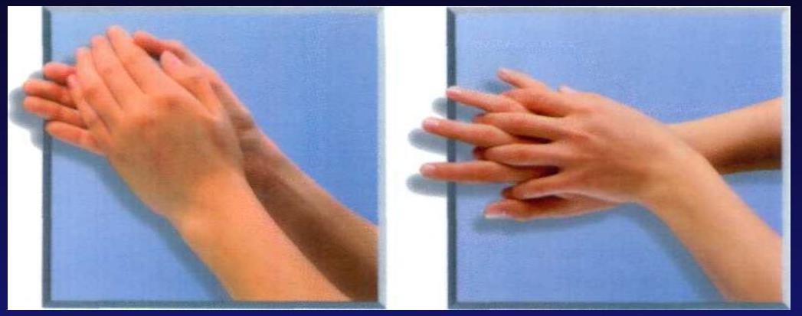
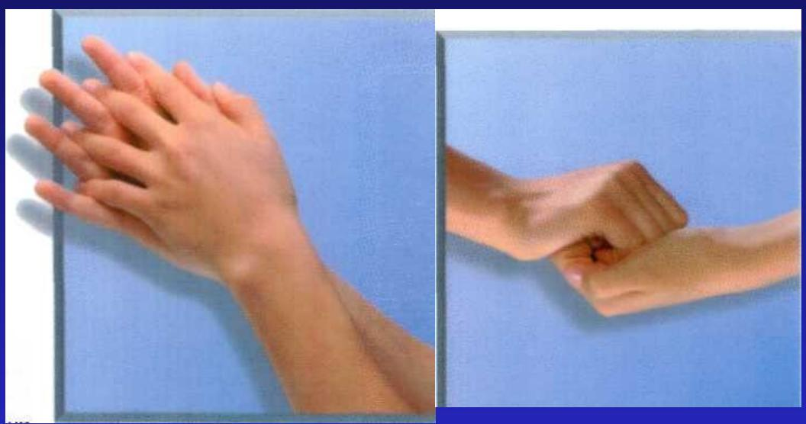
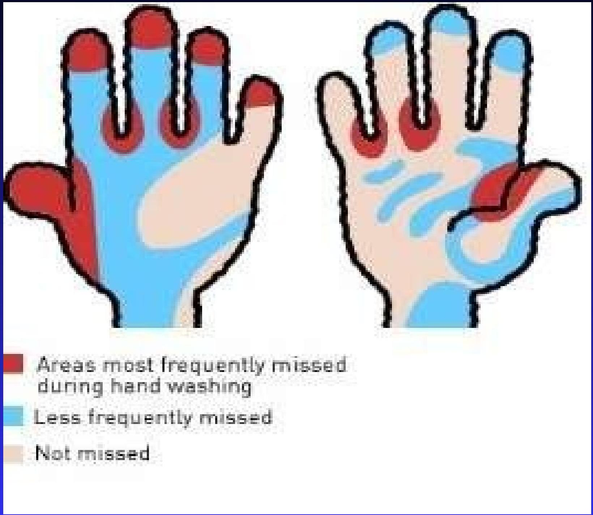
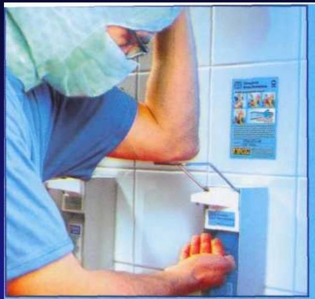
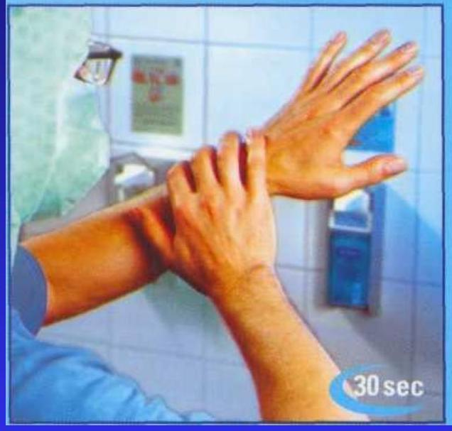

Sterilization and Disinfection
Key Terms
Disinfectant
- A disinfectant is a chemical or physical agent that is applied to inanimate objects to kill microbes.
- Typically an antiseptic is a chemical agent that is applied to living tissue to kill microbes.
- Note that not all disinfectants are antiseptics because an antiseptic additionally must not be so harsh that it damages living tissue.
- With this constraint imposed on antiseptics, in general antiseptics are either not as cheap or not as effective at killing microbes as disinfectants.
Sterilization
- Sterilization is the killing of all microorganisms in a material or on the surface of an object.
- A surface or an object is either sterile or it is not sterile, there are no gradations in sterility.
- Typically the last things to die when one attempts sterilization is the highly heat- (and chemical-, etc.) resistant endospores.
Disinfection
- Disinfection means reducing the number of viable microorganisms present in a sample.
- Not all disinfectants are capable of sterilizing, but, of course, all disinfectants are employed with the hope of disinfecting.
Sanitization
- Sanitization is the cleaning of pathogenic microorganisms from public eating utensils and objects such as that done by the kitchen of a restaurant.
Ignaz Semmelweis
Ignaz Philipp Semmelweis (July 1, 1818 - August 13, 1865), born Semmelweis Ignác Fülöp, was a Hungarian physician who discovered that the incidence of puerperal fever could be drastically reduced by enforcing appropriate hand washing standards in obstetrical clinics. Puerperal fever (also known as childbed fever) was a common occurence in 18th century hospitals, and it was often fatal. He made the discovery in 1847 while head of Vienna General Hospital's First Obstetrical Clinic, which was particularly affected by the contagious illness.
Despite his statistical demonstration of hand washing's efficacy, Semmelweis' practise only earned widespread acceptance years after his death, when Louis Pasteur confirmed the germ theory of disease. A nervous breakdown (or possibly Alzheimer's disease) eventually landed him in a psychiatric hospital, where he died.
An ideal disinfectant should:
- Be fast acting even in the presence of organic substances, such as those in body fluid; [resistant to inactivation].
- Be effective against all types of infectious agents without destroying tissues or acting as a poison if ingested; [broadly active].
- Easily penetrate material to be disinfected without damaging or discoloring the material; [not poisonous or otherwise harmful].
- Be easy to prepare and stable even when exposed to light, heat, or other environmental factors; [penetrating; not damaging to non-living materials].
- Be inexpensive and easy to obtain and use; [stable; easily prepared].
- Not have an unpleasant odor. [not unpleasant to work with].
Mechanisms of action of chemical agents
- Different disinfectants have different mechanisms of action.
- All disinfectants act by harming microorganisms in some manner.
- Mechanisms of harm include:
- Protein denaturation
- Membrane disruption
- Nucleic acid damage
Specific Antimicrobial Agents: Chemical
Quaternary ammonium compounds (quats)
One type of commonly employed cationic detergent disinfectants are quaternary ammonium compounds (quats).
Problems with the use of quats as disinfectants include:
- Their inactivation by soaps
- Their inhibition by divalent cations (calcium and magnesium ions)
- Their inhibition by cotton and other porous organic substances
- Their inability to kill certain species of Pseudomonas
Organic acids
Various organic acids are employed especially as inhibitors of fungi and molds in foods. For example, benzoate of soda is a sodium salt of benzoic acid, an organic acid.
Heavy metals
Various metals and metal salts are commonly employed to prevent microbial growth or kill microbes. For example, silver nitrate has been and increasingly is again used to treat the eyes of newborns to kill any Neisseria gonorrhea that may have been acquired during passage down the birth canal.
A common example in Ohio is the treatment of ponds with copper sulfate (which is blue in water solution) as an anti-algal; note that though effective at inhibiting algal growth in ponds, it may be similarly disruptive of algal growth in down-stream ecosystems.
Selenium compounds are effective antifungals.
Chlorine and Hypochlorite ion
Drinking water is commonly disinfected using hypochlorite. Hypochlorite may either be added directly (i.e., in the form of bleach) or created within water by bubbling chlorine gas through the water. Note that chlorine is less effective in the presence of significant organic compounds (basically because the hypochlorite ion interacts with--oxidizes--organic compounds indiscriminately and thus is used up in the presence off excess organic compounds). (bromine sometimes is employed as a substitute for chlorine)
Iodine
Iodine is often employed as a tincture or as an iodophor. A tincture is an alcohol solution of a substance, in this case iodine. Iodine tinctures may be employed as antiseptics.
Iodophors
Iodophors are organic compounds that slow the release of iodine. The iodophors additionally serve as surfactants, thus increasing penetration while simultaneously steadily supplying iodine over long periods. Betadine and Isodine are examples of iodophors.
Alcohols
Alcohols work best as 70 to 99% mixtures with water. Alcohol-water mixtures are additionally more penetrating than pure alcohols. Either ethanol or isopropyl (rubbing) alcohol may be employed for disinfecting. Alcohols are especially appropriate for application to sites in which their propensity to evaporate away is convenient (e.g., to disinfect skin prior to injection). The down side of alcohols is that they are not terribly penetrating nor capable of killing endospores or other resistant cells. Alcohols should not be applied to wounds since they can cause tissue damage.
Phenol and phenol derivatives (phenolics)
Phenol and their derivatives (called phenolics) are especially useful when disinfecting materials contaminated with organic materials. Lyso1® employs phenolics. Some phenolics are mild enough for use as antiseptics while others are too harsh or otherwise dangerous to be employed on living tissue.
Oxidizing agents (hydrogen peroxide)
Hydrogen peroxide (HOOH) is a typical oxidizing agent. Note that hydrogen peroxide is actually not a terribly effective antiseptic or disinfectant. This is because bacteria and body tissues contain enzymes (catalase) that inactivate hydrogen peroxide. On the other hand, the oxygen released upon inactivation can help oxygenate deep wounds and thus kill strict-anaerobe contaminants.
Alkylating Agents
Formaldehyde, glutaraldehyde, and ethylene oxides are alkylating agents - they add carbon-containing functional groups to biological molecules. Formaldehyde is employed to inactivate viruses and toxins to produce whole-killed vaccines and toxoid vaccines. Glutaraldehyde is capable of sterilizing equipment, though to effect sterilization often requires many hours of exposure.
Ethylene oxide is a gaseous chemosterilizer that is especially useful due to its extraordinary penetrating power; this allows it to penetrate all sorts of nooks and crannies. Ethylene oxide is employed to sterilize prepackaged laboratory equipment that is otherwise destroyed by heat (e.g., plastic petri dishes).
Specific Physical Antimicrobials
Dry heat
To effect sterilization dry heat typically requires higher temperatures than moist heat. It also is less penetrating and requires longer exposure. Nevertheless, application of dry heat is cheap and easy. Typically one bakes materials in an oven at:
- 170°C for at least one hour
- 160°C for at least two hours
- 180°C for at least 1/2 hours
Autoclave
An autoclave is a high pressure device used to allow the application of moist heat above the normal-atmosphere boiling point of water. Exposure to 121°C for 15+ minutes is typically sufficient to sterilize. Again, the material must be 121°C before the clock starts. Large items, large volumes, and items that are poorly penetrated by steam may take much longer than 15 minutes to sterilize.
Pasteurization
Pasteurization is the application of moist heat of less-than boiling temperatures to foods to prevent the growth of food-spoiling organisms as well as various heat-labile pathogens.
Ionizing radiation
Ionizing radiation is radiation that ionizes water; this temporarily turns water into an oxidizing agent. Different types of ionizing radiation display different degrees of penetration. One potential application of ionizing radiation is as an antimicrobial is in food preservation.
Antiseptics vs. Disinfectants
Antiseptics are chemical agents that slow or stop the growth of micro-organisms (germs) on external surfaces of the body and help prevent infections. Antiseptics should be distinguished from antibiotics that destroy micro-organisms inside the body, and from disinfectants, which destroy micro-organisms found on inanimate (non-living) objects. However, antiseptics are often referred to as skin disinfectants.
Most chemical agents can be used as both an antiseptic and a disinfectant. The purpose for which it is used is determined by its concentration. For example hydrogen peroxide 6% solution is used for cleansing wounds, while stronger solutions (>30%) are used in industry as a bleach and oxidising agent.
Skin Flora
(Image of Price 1938 classification of skin flora)
Resident Skin Flora
- Micrococcus Peptococcus
- Staphylococcus (coagulasa-negative)
- Dermatophytes
- Acinetobacter
- Pityrosporum spp
- Propionibakterium spp
- orbiculare
- P acnes
- P-agan lown
- Corynebacterium spp.
- (Demodex)
Transitory skin flora
- S. aureus
- Serratia spp.
- Klebsiella spp.
- Enterobacter agglomerans
- Pseudomonas aeruginosa
Antiseptic and Disinfectant Uses
| Group | Agent | Uses |
|---|---|---|
| Alcohols | Ethyl alcohol 70% Isopropyl alcohol 70% |
Skin disinfectant |
| Quaternary ammonium compounds | Benzalkonium chloride Cetrimide Methylbenzethonium chloride Benzethonium chloride Cetalkonium chloride Cetylpyridinium chloride Dofanium chloride Domiphen bromide |
Skin disinfectant Irrigations Eye drop preservative |
| Chlorhexidine and other diguanides | Chlorhexidine gluconate Chlorhexidine acetate |
Pre-op skin disinfectant Treat wounds Bladder irrigations |
| Peroxides and permanganates | Hydrogen peroxide solution Potassium permanganate solution Benzoyl peroxide |
Wound cleanser Gargles and mouthwashes Irrigations Skin disinfectant |
| Phenols | Chlorocresol Chloroxylenol Chlorophene Hexachlorophane Triclosan |
Skin disinfectant Medicated soaps and solutions |
Hand Disinfection
A series of images illustrating the proper technique for hygienic and surgical hand disinfection.
    